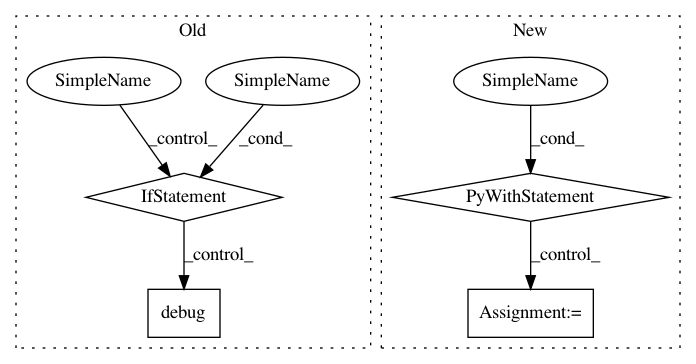

2bffb578491e086ffb39d2740df3c28552ff38d7,autosklearn/evaluation/abstract_evaluator.py,AbstractEvaluator,_fit_and_suppress_warnings,#AbstractEvaluator#Any#Any#Any#,309
Before Change
// kernel approximattion (nystroem sampler)
// QDA
// FastICA
if message.startswith("n_components > n_samples. This is " \
"not possible.") or \
message == "Variables are collinear" or \
message.startswith("FastICA did not converge"):
self.logger.debug("Suppressed warning from file %s: %s",
filename, message)
else:
warnings.showwarning(message=warning.message,
category=warning.category,
filename=warning.filename,
lineno=warning.lineno)
// print(type(warning), warning, message)
return model
After Change
(filename, lineno, category.__name__, message))
return
with warnings.catch_warnings():
warnings.showwarning = send_warnings_to_log
// warnings.simplefilter("ignore")
model = model.fit(X, y)
return model
In pattern: SUPERPATTERN
Frequency: 3
Non-data size: 4
Instances
Project Name: automl/auto-sklearn
Commit Name: 2bffb578491e086ffb39d2740df3c28552ff38d7
Time: 2016-05-10
Author: feurerm@informatik.uni-freiburg.de
File Name: autosklearn/evaluation/abstract_evaluator.py
Class Name: AbstractEvaluator
Method Name: _fit_and_suppress_warnings
Project Name: jsalt18-sentence-repl/jiant
Commit Name: 2573c649518391ada6214cfc72d20421dfac4072
Time: 2018-03-16
Author: wang.alex.c@gmail.com
File Name: src/preprocess.py
Class Name:
Method Name: get_embeddings
Project Name: pantsbuild/pants
Commit Name: 35ba6bfdb63cfedbedfd28c1705996e582178064
Time: 2015-09-23
Author: kwilson@twopensource.com
File Name: src/python/pants/java/nailgun_executor.py
Class Name: NailgunExecutor
Method Name: ensure_connectable